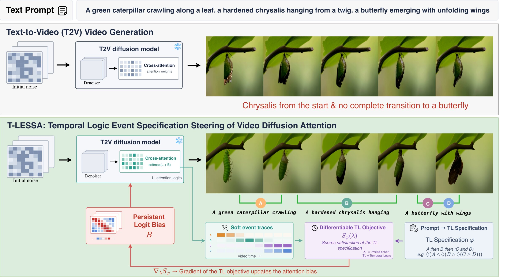
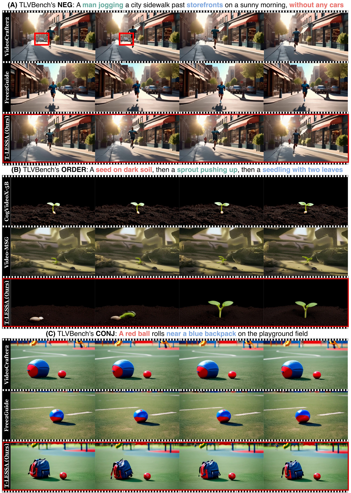

Text-to-video models still miss events, merge them, or show them in the wrong order. T-LESSA writes the prompt as a temporal-logic specification and steers a frozen model's cross-attention toward satisfying it, with no training and no latent optimization.
Gains are relative to the same backbone without steering.
Recent advancements in generative video promise to transform challenging scenarios into training data: rare driving situations for autonomous vehicles, synthetic scenes for robot simulation, and realistic deepfakes for stress testing detection models. However, in practice, we still prompt a model and pray to get faithful videos. While a large body of research exists on generating good video, there is a lack of methods to enforce temporal and logical requirements (e.g., ordering, negation, co-occurrence) during video generation. Prior work has focused on fine-tuning with preference feedback or verifiable rewards. However, these methods require additional training and reduce a temporal-logic requirement to a scalar reward. This limitation has motivated a recent line of work that steers video generation at inference time without any training. Although these approaches control when each required event appears, they do not ensure that the generated videos align with their temporal and logical requirements. Therefore, we introduce T-LESSA, a training-free method that steers video generation toward satisfying a temporal-logic requirement. We show that T-LESSA improves temporal completion by 14.3% and, across four backbones, temporal-logic satisfaction by 21.8% over the unsteered baseline, at 1.7% to 13.5% additional generation time. Furthermore, T-LESSA improves compositional alignment in 14 of 16 backbone-category pairs on T2V-CompBench, and largely preserves video quality.
Temporal logic is the intermediate representation between the prompt and the denoiser. From it, T-LESSA builds a differentiable objective and applies its gradient to cross-attention at every steered denoising step.
An LLM agent splits the prompt into atomic events, assigns a proposition to each, and writes their temporal and logical relations as a finite-trace formula. A validation pass checks that every proposition is declared and grounded in a phrase of the prompt. For “A dog enters the room, and afterward the dog sits down. No cat appears,” the agent returns
with \(a\) = “a dog enters the room”, \(b\) = “the dog sits down” and \(c\) = “cat appears”.
At denoising step \(i\), the attention mass that video tokens at temporal position \(t\) assign to the phrase of proposition \(\rho\) gives an event score in \([0,1]\), averaged over the selected heads \(\mathcal{C}\) and the \(N_s\) spatial tokens:
Each score is treated as a Bernoulli parameter. The specification's deterministic automaton runs over the time-unrolled trace, which gives a discrete-time Markov chain, and a bounded-reachability PCTL query asks how likely the chain is to end in an accepting state. Backward dynamic programming answers it exactly:
\(S_\varphi\) is the probability of satisfying \(\varphi\) under this attention-based model, not a calibrated probability that the rendered video satisfies it.
The normalized gradient of \(S_\varphi\) accumulates in a persistent, bounded bias \(B\) that is added to the attention logits of each event's tokens at the next denoising step. Model weights and diffusion latents are never optimized.
By default we steer the first 40 of 50 denoising steps.
We introduce TLVBench, a benchmark of 400 prompts that checks whether generated videos satisfy finite-trace temporal-logic specifications. Each prompt comes with its specification and the atomic propositions of its events, grounded as character spans in the prompt.
Every prompt starts with “A realistic high-quality cinematic video.”, omitted here. We also evaluate on StoryEval, TCBench, T2V-CompBench and VBench.
Every card uses one prompt and one seed for all methods. Colored phrases are the events of the specification, and a struck-through red phrase must never appear.
Forty pairs chosen for this page. Candidates were ranked by how much both VLM judges preferred T-LESSA over the comparator, then kept only if the difference is visible in still frames. The note under each pair says what to look for.
Not curated. For each backbone and class, these are the first six prompt ids in alphabetical order, with every method on one shared seed. The sample was fixed before any clip was viewed, so it includes failures.

| Backbone | Method | NEG | CONJ | ORDER | TEMPLOG | ||||||||
|---|---|---|---|---|---|---|---|---|---|---|---|---|---|
| Q | I3 | NV | Q | I3 | NV | Q | I3 | NV | Q | I3 | NV | ||
| Wan2.1-14B | Unsteered | .559 | .472 | .516 | .698 | .796 | .654 | .569 | .701 | .204 | .307 | .296 | .233 |
| SwitchCraft | – | – | – | – | – | – | .670* | .759* | .212 | – | – | – | |
| T-LESSA (ours) | .652* | .603* | .630* | .760* | .874* | .743* | .622* | .747* | .214 | .421* | .430* | .313* | |
| CogVideoX-5B | Unsteered | .542 | .433 | .498 | .244 | .411 | .216 | .256 | .478 | .137 | .197 | .319 | .235 |
| Video-MSG | – | – | – | .287 | .516 | .302 | .223 | .417 | .135 | – | – | – | |
| T-LESSA (ours) | .655* | .578* | .636* | .350* | .544* | .320* | .365* | .566* | .138 | .297* | .440* | .303* | |
| VideoCrafter2 | Unsteered | .452 | .410 | .312 | .370 | .498 | .230 | .190 | .346 | .133 | .139 | .286 | .167 |
| Free2Guide | .436 | .405 | .322 | .364 | .492 | .229 | .171 | .303 | .134 | .137 | .290 | .157 | |
| T-LESSA (ours) | .488* | .457* | .334 | .514* | .672* | .270* | .266* | .430* | .139 | .188* | .347* | .175 | |
| AnimateDiff | Unsteered | .405 | .345 | .297 | .231 | .414 | .184 | .186 | .378 | .133 | .140 | .293 | .163 |
| VideoGuide | .412 | .391 | .304 | .259 | .399 | .182 | .180 | .367 | .135 | .133 | .279 | .166 | |
| T-LESSA (ours) | .435* | .381* | .303 | .297* | .533* | .203* | .221* | .440* | .137 | .187 | .324 | .177 | |
TL satisfaction on TLVBench, judged by Qwen2.5-VL-7B (Q), InternVL3-8B (I3) and NeuS-V (NV). * marks \(p<.05\) against the unsteered backbone (Wilcoxon signed-rank test on prompt means over three seeds). SwitchCraft needs an ordered list of events, and Video-MSG's planner cannot state that an object is absent, so neither applies to NEG or TEMPLOG. NeuS-V barely moves on ORDER because nested eventualities can be satisfied by a single frame; the sequence metrics below measure ordering directly.
Average relative gain in TL satisfaction over the unsteered backbone.
| Wan2.1-14B | CogVideoX-5B | |||||
|---|---|---|---|---|---|---|
| Method | TC-Score | TCR | StoryEval | TC-Score | TCR | StoryEval |
| Unsteered | .675 | .290 | .336 | .396 | .060 | .190 |
| T-LESSA | .728 | .360 | .368 | .489 | .140 | .240 |
Sequence completion: TC-Score and TCR from TCBench, and StoryEval's story-completion rate. TCR requires all four TCBench assertions to pass, so it penalizes correct events in the wrong order.
| One object | Two objects | |||||
|---|---|---|---|---|---|---|
| Objective | Acc. | Abs. | Pres. | Acc. | Static | Temp. |
| None (unsteered) | 69.94 | 59.75 | 80.13 | 38.68 | 48.05 | 30.16 |
| TempoControl | 83.31 | 82.25 | 84.38 | 55.52 | 62.80 | 48.89 |
| T-LESSA | 87.25 | 93.50 | 81.00 | 48.08 | 62.93 | 34.59 |
| T-LESSA + TC reg. | 82.75 | 81.88 | 83.63 | 55.92 | 68.54 | 44.46 |
TempoControl's latent-steering setup with only the objective replaced. The TL objective also steers latents; TC reg. adds TempoControl's visibility and entropy terms.
| Wan2.1-14B | CogVideoX-5B | AnimateDiff | VideoCrafter2 | |||||||||
|---|---|---|---|---|---|---|---|---|---|---|---|---|
| Category | Unsteered | SwitchCraft | Ours | Unsteered | Video-MSG | Ours | Unsteered | VideoGuide | Ours | Unsteered | Free2Guide | Ours |
| Dynamic | .0823 | .1072 | .0939 | .0146 | .0101 | .0335 | .0127 | .0094 | .0363 | .0122 | .0083 | .0303 |
| Consistent | .8220 | .8057 | .8190 | .7740 | .6332 | .7954 | .6740 | .6681 | .6769 | .7526 | .7908 | .7748 |
| Action | .7213 | .7241 | .7441 | .5317 | .3722 | .5654 | .4198 | .4126 | .4250 | .4822 | .5148 | .5380 |
| Interaction | .6950 | – | .7113 | .5878 | .1969 | .6109 | .5574 | .5373 | .5067 | .6411 | .6794 | .6831 |
T2V-CompBench, official 200 prompts per category. SwitchCraft does not apply to Interaction, where every prompt describes a single event.
| Method | Subject | Backgr. | Aesthetic | Imaging | Motion | Dynamic | Flicker | Temp. style | Objects | Spatial | Overall |
|---|---|---|---|---|---|---|---|---|---|---|---|
| Wan2.1-14B (unsteered) | .9305 | .9725 | .6423 | .6671 | .9668 | .7917 | .9822 | .2486 | .6471 | .8013 | .2665 |
| T-LESSA (ours) | .9255 | .9726 | .6367 | .6583 | .9657 | .8056 | .9819 | .2489 | .7096 | .8377 | .2638 |
| VideoCrafter2 (unsteered) | .9523 | .9819 | .6231 | .6548 | .9708 | .7500 | .9790 | .2631 | .5038 | .3554 | .2867 |
| T-LESSA (ours) | .9332 | .9736 | .6092 | .6629 | .9538 | .8194 | .9719 | .2640 | .5213 | .4232 | .2861 |
| CogVideoX-5B (unsteered) | .9487 | .9725 | .6028 | .6229 | .9774 | .4306 | .9724 | .2465 | .5488 | .5920 | .2573 |
| T-LESSA (ours) | .9490 | .9734 | .5752 | .5725 | .9753 | .5278 | .9752 | .2395 | .6052 | .5087 | .2522 |
VBench, each dimension on its official prompt subset. T-LESSA raises Dynamic Degree and Multiple Objects on all three backbones, and the overall score drops by less than .006. Steering adds 1.7% generation time on Wan2.1-14B and 13.5% on CogVideoX-5B, with 2.96 and 0.19 GiB more peak memory.
@misc{choi2026tlessa,
title = {T-LESSA: Temporal-Logic Event Specification Steering of Video Diffusion Attention},
author = {Choi, Minkyu and Goel, Harsh and Homsi, Soamar and Chinchali, Sandeep},
year = {2026},
url = {https://utaustin-swarmlab.github.io/tlessa/}
}This work was supported by the Air Force Research Laboratory, Information and Spectrum Warfare Directorate (AFRL/RF). The views and conclusions contained in this document are those of the authors and should not be interpreted as representing the official policies, either expressed or implied, of the Air Force Research Laboratory or the U.S. Government.